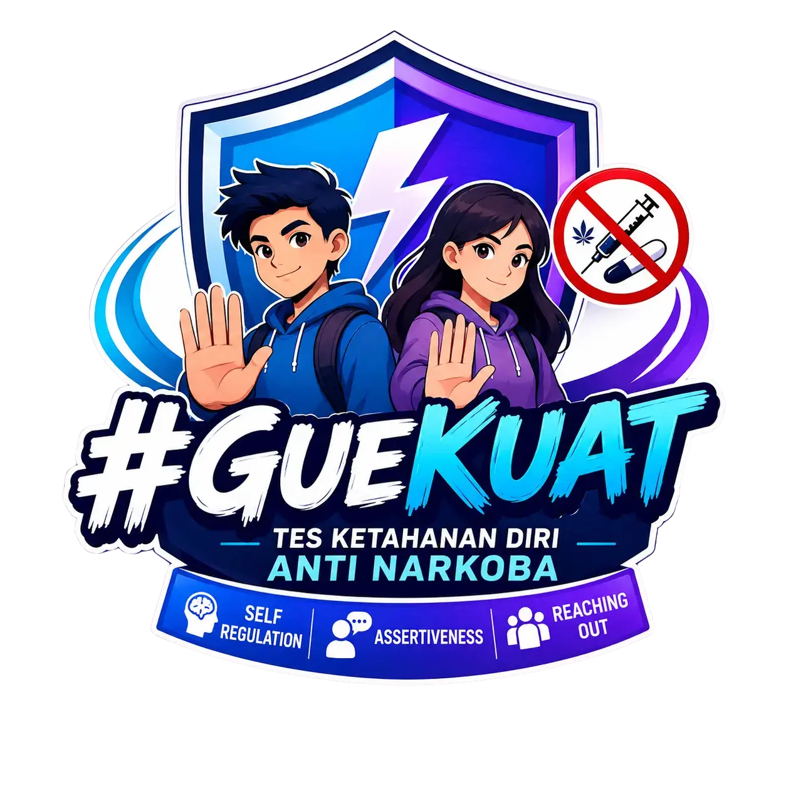

Kompas Kekuatan Diri
Ikuti 18 cerita reflektif untuk mengenali cara kamu mengelola diri, berani bersikap, dan membangun dukungan. Tidak ada jawaban benar atau salah. Jawablah sesuai dirimu.

#GueKuat UmumIkuti 18 cerita reflektif untuk mengenali cara kamu mengelola diri, berani bersikap, dan membangun dukungan. Tidak ada jawaban benar atau salah. Jawablah sesuai dirimu.